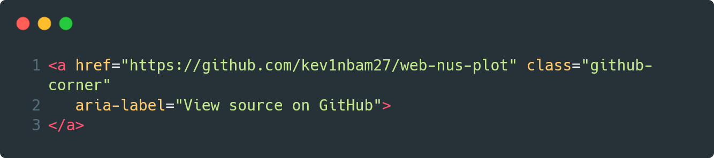

EN
DE
Eine Arbeit von F. A. Andrist und L. J. Fondado
A work by F. A. Andrist and L. J. Fondado
Diese Abschlussarbeit befasst sich mit Luft, genauer, mit dem Erfassen von Daten aus der Luft und den Auswirkungen von Unreinheiten in der Luftqualität. Im Zuge der Covid-19-Pandemie, ausgelöst durch das Virus Sars-CoV-2, waren Begriffe, wie CO2-Erfassung oder Luftqualität in aller Munde, deshalb stiessen auch wir auf diese Thematik. Zugleich interessierte uns auch das Sammeln und Auswerten von Daten in einem wissenschaftlichen Kontext, so beschlossen wir uns näher damit zu befassen, indem wir ein Messgerät bauen, das verschiedene Partikel, die CO2 und die Feinstaubkonzentration, in der Luft messen sollte. Unser Ziel war es jedoch nicht nur, ein solches Gerät zu konstruieren, sondern mit Hilfe des Gerätes auch Daten zu sammeln, und diese auszuwerten und zu Interpretieren. Ebenfalls wollten wir ein Verständnis darüber haben, wie ein Sensor (hier ein NDIR) funktioniert, und was diese Unreinheiten in der Luft für Auswirkungen auf den Menschen und die Umwelt haben. Hierzu haben wir neben der Dokumentation des Baus und den verschiedenen Testreihen mit dem Sensor auch verschiedene möglichst aktuelle Texte verfasst, die diese Verständnisfragen beantworten sollen. Das Gerät sollte nicht nur dem Erfassen, und der anschliessenden Aufbereitung von Daten dienen, sondern es sollte den Benutzern auch die momentanen Werte und, falls diese Werte zu hoch sein sollten, ein visuelles Signal aussenden, in Form von roten Lichts.
Wir beschlossen die Arbeit unter uns aufzuteilen, der eine sollte den Bau des Sensors und die anschliessende Programmierung übernehmen, der anderen sollte die Recherche und das Ausarbeiten der Testkonzepte übernehmen. Der Bau des Gerätes begann mit dem Zusammenbau der einzelnen Elektronikbauteile, weil wir unseren Sensoren auf Basis des modularen QWIIC/STEMMA QT Ökosystems zusammenbauen wollten, gestaltete der Bau sich relativ einfach, wir mussten nur wenige Bauteile löten, da diese durch ebengenanntes Ökosystem einfach zu verbinden waren. Des Weiteren war ein individualisiertes Gehäuse von Nöten, um den Sensor nicht andauernd Umwelteinflüssen auszusetzen und um den Lufteinfall zu regeln. Da wir über einen 3D-Drucker verfügten, nahmen wir diesen zu Hilfe für unser Gehäuse.
Beim Rechercheteil unserer Arbeit, legten wir einen besonderen Wert darauf, möglichst nahe an wissenschaftlichen Publikationen unsere Recherche zu betreiben und nicht profane verkürzte Zusammenfassungen aus Nachrichtendistributions-medien zu zitieren. Hierzu nutzten wir die Suchmaschine «Google Scholar», diese verfügt über einen Index von Metadaten und Volltexten wissenschaftlicher Publikationen. Wir legten unser Augenmerk zu Beginn vor allem auf Metaanalysen und systematische Übersichtsarbeiten (engl. «Reviews»), anschliessend, falls nötig, suchten wir noch spezifischere Publikationen.
This thesis deals with air, more precisely, with the collection of data from the air and the effects of impurities in air quality. In the course of the Covid-19 pandemic, triggered by the Sars-CoV-2 virus, terms such as CO2 detection or air quality were on everyone's lips, which is why we also came across this topic. At the same time, we were also interested in collecting and evaluating data in a scientific context, so we decided to take a closer look at it by building a measuring device that would measure different particles, the CO2 and the fine dust concentration, in the air. However, our goal was not only to design such a device, but also to collect data with the help of the device, and to evaluate and interpret it. We also wanted to have an understanding of how a sensor (here an NDIR) works, and what effects these impurities in the air have on humans and the environment. In addition to the documentation of the construction and the various test series with the sensor, we have also written various texts that are as up-to-date as possible to answer these comprehension questions. The device should not only be used for the acquisition and subsequent processing of data, but it should also send users the current values and, if these values are too high, a visual signal in the form of red light.
We decided to divide the work among ourselves, one should take over the construction of the sensor and the subsequent programming, the other should take over the research and the elaboration of the test concepts. The construction of the device began with the assembly of the individual electronic components, because we wanted to assemble our sensors on the basis of the modular QWIIC/STEMMA QT ecosystem, the construction was relatively simple, we only had to solder a few components, as they were easy to connect through the aforementioned ecosystem. Furthermore, an individualized housing was needed in order not to constantly expose the sensor to environmental influences and to regulate the air incidence. Since we had a 3D printer, we used it for our housing.
In the research part of our work, we attached particular importance to conducting our research as close as possible to scientific publications and not to cite profane shortened summaries from news distribution media. For this purpose, we used the search engine "Google Scholar", which has an index of metadata and full texts of scientific publications. At the beginning, we focused primarily on meta-analyses and systematic reviews, then, if necessary, we looked for even more specific publications.
Zu Beginn unseres Projektes, mussten wir die einzelnen Bauteile evaluieren, einerseits die verschiedenen Sensoren, aber auch einen Mikrocontroller und verschiedene Anschlüsse. Wir entschieden uns auf Basis des QWIIC/STEMMA QT Ökosystems aufzubauen, da dieses Ökosystem es uns ermöglicht die einzelnen Bauteile, ohne viel Löten und anderweitige Sorgen, wie falsches Verbinden von einzelnen Jumperkabeln, zu verbinden. Nachdem wir uns für dieses Ökosystem entschlossen hatten, war es um einiges einfacher entsprechende Sensoren zu finden, denn dieser spezielle Verbindungstyp liess nur gewisse Sensoren zu, die über die entsprechenden Schnittstellen verfügten. Als Sensoren für die CO2-Konzentration wählten wir einen auf der NDIR-Technologie basierenden Sensoren, den SCD-30 des Herstellers Sensirion, dieser verfügt über eine Genauigkeit von ±30 ppm (parts per million = dt. „Teilchen pro Million“), und eine Operationsspannweite von 400-10`000 ppm, überdies verfügt der SCD-30 Sensor auch über ein Temperatur– und Luftfeuchtigkeitssensoren, mit deren Hilfe man die Daten besser interpretieren und Zusammenhänge erkennen kann[1]. Als Feinstaubsensoren, wählten wir den PMSA003I des Herstellers Adafruit, er misst die Partikel in der Luft die unter 10 µm, unter 2,5 µm und unter 1 µm gross sind; des Weiteren misst er die Teilchenkonzentration von 0,1l Luft in 0,3 µm, 0,5 µm; 1,0 µm; 2,5 µm; 5 µm und 10 µm[2].
Aber wir benötigten nicht nur Sensoren, sondern auch einen Mikrocontroller, ein Zeitmessgerät, und ein Display. Der «nRF52840 Express» des Herstellers Adafruit, wurde unser Microcontroller, er hatte den Vorteil, einer nativen USB-Unterstützung (er kann ohne externen USB-Chip, von einem PC als USB-Gerät erkannt werden, z.B. als Maus, Tastatur oder auch als Speichermedium), und er ist mit Bluetooth Low Energy kompatibel, was uns ermöglicht kabellos über so gut wie jede Plattform mit dem Chip zu kommunizieren. Die Leistung des Chips war ebenfalls angemessen mit einem ARM Cortex M4 Chip und einer Speicherkapazität von 1 MB Flash-Speicher[3] (hier ist anzumerken, dass unsere Messdaten auf einer separaten MicroSD-Karte gespeichert sind). Das Display sollte es ermöglichen die momentanen Messwerte zu betrachten, aber auch gewisse Einstellungen des Gerätes, wie den Messintervall, oder das Bluetooth-Modul, zu verwalten. Der SerLCD 20x4 des Herstellers Sparkfun, erachteten wir als gute Lösung, er verfügt über ein 20x4 Pixel LCD und hat des Weiteren auch eine RGB-Hintergrundbeleuchtung, mit dieser konnten wir die optische Rückmeldung, bei zu hohen Werten sicherstellen. Zuletzt noch als wichtiges Modul fehlte ein Zeitmessgerät, da verhalf uns der «Adalogger FeatherWing» des Herstellers Adafruit, das Modul verfügte nicht nur über eine Echtzeituhr, sondern auch über einen MicroSD-Anschluss. Neben den Hauptmodulen benötigten wir auch ein Kabelkit und ein HUB für die Anschlüsse des STEMMA QT/QWIIC Ökosystems.
Der Zusammenbau des Gerätes gestaltete sich nicht sehr schwer, da sich das meiste Löten erübrigte, einzig musste das HUB des Kabelsystems an den Microcontroller und den Adalogger angelötet werden. Aber die Vollständigkeit des Gerätes, war hiermit noch nicht erreicht, das Gerät benötigte noch ein Gehäuse. Das Gehäuse konzipierten wir selbst, nahmen die Massen unserer Bauteile ab und modellierten in einer 3D-Software ein optimales Gehäuse. Wir versuchten es so klein als möglich zu konstruieren, aber gleichzeitig auch einen optimalen Luftdurchfluss gewährleisten zu können. Als das Gehäuse fertig modelliert war, druckten wir es mit Hilfe eines 3D-Druckers aus und bauten die einzelnen Komponenten ein. Dieses Gehäuse, war aber nicht unser finales Gehäuse, denn nach mehreren Einsätzen fiel uns auf, dass es noch mehrere Schwächen aufwies.
Die letzte Hürde vor der Fertigstellung des Messgerätes, war die Programmierung. Der Microcontroller gab zwei Möglichkeiten vor das Gerät zu programmieren, einerseits über «Circuitpython», eine simple Programmiersprache die auf Python basiert, oder über die Arduino IDE (Integrated Development Environment) die die Programmiersprache C++ nutzt. Circuitpython verfügt über den Vorteil, dass man den Code direkt in das Gerät einspeisen kann, weil der Microcomputer über einen Python-Interpreter verfügt, mit dessen Hilfe kann man das Programm direkt in Textform dem Gerät übergeben, und muss es nicht noch zuerst mit einem Compiler in «Maschinensprache» übersetzen. Die Arduino IDE/C++ Programmierung hatte den grossen Vorteil viel weniger Zeit zu nutzen, da der Microcontroller nur noch die Befehle ausführen musste, ohne sie zu interpretieren, so sparte man auch einiges an elektrischem Energieverbrauch und Speicherplatz. Aus diesen Gründen entschieden wir uns für die Programmierung mit der Sprache C++, auch wenn sie anspruchsvoller war.
Zu Beginn implementierten wir die grundsätzlichen Funktionen, wie das Auslesen der Messdaten und das Speichern der Daten auf einer MicroSD-Karte, aber auch, dass gleichzeitig die Messzeiten hinzugefügt wurden Dies gestaltete sich relativ einfach, da die Hersteller der verschiedenen Teilsensoren eigene Bibliotheken und Guides bereitstellten, um die Programmierung zu erleichtern, sodass wir nur Funktionen abrufen mussten, die die Messwerte der Sensoren angaben, und diese mussten wir dann zusammen mit der Zeit in eine Datei (.CSV). Dieser Zyklus wiederholte sich immer zu einer bestimmten Zeit, dem Messintervall, denn eigentlich gibt der Sensor andauernd neue Werte an, aber diese werden nur zu bestimmten Zeiten gespeichert. Die Zeilen unseres Codes wuchsen rasant, bald schon stiessen wir auf eine der grossen Schwächen der Arduino IDE, denn die Übersichtlichkeit von längeren Abschnitten an Code war äusserst gering, weshalb wir uns entschieden den Code fortan nicht mehr in der Arduino IDE, sondern in Visual Studio Code, eine andere IDE, die von Microsoft entwickelt wurde, aber Open Source ist, den Code zu schreiben. Nachdem diese Hürde aus dem Weg geschafft war, konnten wir uns der weiteren Programmierung widmen. Zuerst entwickelten wir die Steuerung des Gerätes, dieses sollte einerseits analog, aber auch digital kontrollierbar sein. Die analoge Steuerung gewährleisteten wir über einen Drehknopf, ein Drehknopf verfügt über zwei Steuerungsmöglichkeiten, wie man aus dem Namen bereits schliessen kann, nämlich das Drehen und das Drücken des Knopfes. Mithilfe des Drehens sollte das wechseln des Menüs/der Auswahlmöglichkeiten kontrolliert werden, das Drücken sollte den ausgewählten Reiter öffnen, resp. aktivieren/deaktivieren. Die Programmierung fiel uns leicht, man musste nur jeder Bewegung des Drehknopfes die entsprechende Aktion anfügen, einzig die Erhaltung der vorgenommenen Einstellungen über mehrere Sessionen, konnten wir nicht programmieren, was aber auch kein grosses Problem darstellte, denn die Einstellungsmöglichkeiten umfassten nur sehr wenig, man kann das RGB-Licht des Displays, den Messungsintervall und die Bluetoothfunktion.
Die digitale Steuerung planten wir über eine Applikation namens «Bluefruit», die der Hersteller unseres Microcontrollers, Adafruit, bereitstellte. Diese Applikation, kann sich über Bluetooth mit verschiedensten Geräten, die dieser Verbindung fähig sind, verbinden. «Bluefruit» ermöglicht es nicht nur über die Bluetoothverbindung, nicht nur über UART (siehe Infokasten Verbindungen zu kommunizieren, sondern es ist auch möglich andere Informationen, wie den Akkustand, und in unserem Fall, auch direkt die Daten graphisch über einen Plotter zu betrachten. Aber um die Verbindung mit dem Gerät über die App mussten wir unseren Code erweitern um die Kommunikation zu ermöglichen. Das war nicht schwer, denn mit einem Handbuch von Adafruit wurde auch ein Code überliefert, den wir dann selbst in unser Programm einfügten.
Zuletzt wollten wir noch die Möglichkeit haben, die Daten auf andere Geräte übertragen zu können, denn in der Rohform konnten keine Daten übertragen werden, da das Gerät nicht als Speichermedium erkannt wurde, und man daher auch keinen Zugriff auf die Dateien hatte. Gleichzeitig wollten wir aber auch nicht, dass man aus Versehen den Code auf dem Microcontroller löscht, daher sollte es nur möglich sein auf die Daten, der MicroSD-Karte Zugriff zu haben. Hierzu mussten wir mit dem Messgerät ein USB-Speichermedium emulieren, das aber nur die Dateien auf der MicroSD-Karte ausgab. Diese Programmierung stellte sich schwerer dar als sie zuerst schien, sie war viel komplizierter, als es die Fassade wirken liess. Glücklicherweise fanden wir aber wieder ein Handbuch, das den grundsätzlichen Code lieferte, den wir dann mit einigen Anpassungen an unser Programm anhängten.
At the beginning of our project, we had to evaluate the individual components, on the one hand the different sensors, but also a microcontroller and various connections. We decided to build on the basis of the QWIIC/STEMMA QT ecosystem, as this ecosystem allows us to connect the individual components without much soldering and other worries, such as incorrect connection of individual jumper cables. After we decided on this ecosystem, it was much easier to find appropriate sensors, because this particular type of connection only allowed certain sensors that had the appropriate interfaces. As sensors for the CO2 concentration, we chose a sensor based on NDIR technology, the SCD-30 from the manufacturer Sensirion, which has an accuracy of ±30 ppm (parts per million), and an operating range of 400-10,000 ppm, and the SCD-30 sensor also has a temperature and humidity sensor, which can be used to better interpret the data and detect correlations[1]. As fine dust sensors, we chose the PMSA003I from the manufacturer Adafruit, it measures the particles in the air that are below 10 μm, below 2.5 μm and below 1 μm in size; it also measures the particle concentration of 0.1l of air in 0.3 μm, 0.5 μm; 1.0 μm; 2.5 μm; 5 μm and 10 μm[2].
But we needed not only sensors, but also a microcontroller, a timer, and a display. The «nRF52840 Express» from the manufacturer Adafruit, became our microcontroller, it had the advantage of native USB support (it can be recognized by a PC as a USB device without an external USB chip, e.B. as a mouse, keyboard or even as a storage medium), and it is compatible with Bluetooth Low Energy, which allows us to communicate wirelessly with the chip via almost any platform. The performance of the chip was also adequate with an ARM Cortex M4 chip and a memory capacity of 1 MB of flash memory[3] (it should be noted here that our measurement data is stored on a separate MicroSD card). The display should make it possible to view the current measured values, but also to manage certain settings of the device, such as the measurement interval, or the Bluetooth module. The SerLCD 20x4 of the manufacturer Sparkfun, we considered a good solution, it has a 20x4 pixel LCD and also has an RGB backlight, with this we could ensure the optical feedback, if too high values. Finally, as an important module, a time measuring device was missing, as the "Adalogger FeatherWing" from the manufacturer Adafruit helped us, the module not only had a real-time clock, but also a MicroSD connection. In addition to the main modules, we also needed a cable kit and a HUB for the connections of the STEMMA QT/QWIIC ecosystem.
The assembly of the device was not very difficult, as most of the soldering was unnecessary, only the HUB of the cable system had to be soldered to the microcontroller and the adalogger. But the completeness of the device, was not yet reached, the device still needed a housing. We designed the housing ourselves, removed the masses of our components and modeled an optimal housing in 3D software. We tried to make it as small as possible, but at the same time to ensure an optimal air flow. When the housing was fully modeled, we printed it with the help of a 3D printer and installed the individual components. This case, however, was not our final case, because after several uses we noticed that it still had several weaknesses.
The last hurdle before the completion of the measuring device was the programming. The microcontroller offered two possibilities to program the device, on the one hand via "Circuitpython", a simple programming language based on Python, or via the Arduino IDE (Integrated Development Environment) which uses the programming language C++. Circuitpython has the advantage that you can feed the code directly into the device, because the microcomputer has a Python interpreter, with the help of which you can pass the program directly to the device in text form, and does not have to first translate it into "machine language" with a compiler. The Arduino IDE/C++ programming had the great advantage of using much less time, since the microcontroller only had to execute the commands without interpreting them, so it also saved some electrical energy consumption and storage space. For these reasons, we chose to program with the C++ language, even if it was more demanding.
At the beginning, we implemented the basic functions, such as reading the measurement data and storing the data on a MicroSD card, but also that the measurement times were added at the same time. This was relatively easy, as the manufacturers of the various partial sensors provided their own libraries and guides to facilitate programming, so that we only had to retrieve functions that indicated the measured values of the sensors, and we then had to put them together with the time in a file (. CSV). This cycle was always repeated at a certain time, the measurement interval, because actually the sensor constantly gives new values, but these are only stored at certain times. The lines of our code grew rapidly, soon we came across one of the big weaknesses of the Arduino IDE, because the clarity of longer sections of code was extremely low, which is why we decided to use the code no longer in the Arduino IDE, but in Visual Studio Code, another IDE developed by Microsoft, but open source, write the code. After this hurdle was overcome, we were able to devote ourselves to further programming. First, we developed the control of the device, which should be analog on the one hand, but also digitally controllable. The analog control we ensured via a rotary knob, a rotary knob has two control options, as you can already deduce from the name, namely turning and pressing the button. With the help of the rotation the change of the menu / the selections should be controlled, the pressing should open the selected tab, or activate / deactivate. The programming was easy for us, you just had to add the corresponding action to every movement of the knob, only the preservation of the settings made over several sessions, we could not program, which was not a big problem, because the setting options included very little, you can use the RGB light of the display, the measurement interval and the Bluetooth function.
We planned the digital control via an application called "Bluefruit", which was provided by the manufacturer of our microcontroller, Adafruit. This application can connect via Bluetooth to various devices that are capable of this connection. «Bluefruit» makes it possible not only to communicate via the Bluetooth connection, not only via UART (see info box connections), but it is also possible to view other information, such as the battery level, and in our case, also directly the data graphically via a plotter. But in order to connect to the device via the app, we had to extend our code to allow communication. That was not difficult, because with a manual from Adafruit a code was also handed down, which we then inserted into our program ourselves.
Finally, we wanted to have the possibility to transfer the data to other devices, because in the raw form no data could be transferred, because the device was not recognized as a storage medium, and therefore you had no access to the files. At the same time, we did not want you to accidentally delete the code on the microcontroller, so it should only be possible to have access to the data of the MicroSD card. To do this, we had to emulate a USB storage medium with the meter, which only output the files on the MicroSD card. This programming was harder than it seemed at first, it was much more complicated than the façade made it seem. Fortunately, we found a manual that provided the basic code, which we then attached to our program with some adjustments.
Nachdem wir das Gerät und alle unterstützenden Mittel fertiggestellt hatten, kamen wir zum zweiten Hauptteil unseres Projekts, dem Erfassen der Daten und der Aufbereitung ebengenannter. Aber bevor die Datenerfassung beginnen konnte, musste der Sensor noch kalibriert werden, denn sonst wären die Daten sehr ungenau, man könnte das Gerät direkt in Aarau kalibrieren, aber dort verfügten wir nicht über genaue CO2 Messwerte, einzig verfügten wir über CO2 Werte einer Messstation der Universität Bern auf dem Jungfraujoch. Daher mussten wir uns an eine Lage begeben, die einigermassen abgeschieden war, sodass der CO2 Wert sich möglichst dem Wert auf dem Jungfraujoch annähern kann, als diese Lage wählten wir den Hombergegg auf 778 m.ü.M. Dort kalibrierten wir ihn auf die Messwerte des Jungfraujochs.
Die Datenerfassung war eigentlich trivial, einzig die Stromversorgung und die Platzierung des Gerätes erforderte einiges an Geschick. Die Stromversorgung wird bei unserem Gerät, wie vielleicht schon ersichtlich wurde, nicht über einen internen Akku gewährleistet, sondern über einen USB-C Anschluss, der an eine Energiequelle angeschlossen wird. Als Energiequelle nutzten wir entweder Powerbanks oder wir schlossen das Gerät über einen Adapter direkt an den heimischen Stromanschluss an. Powerbanks kamen zum Einsatz, wenn wir an schwer erreichbaren oder abgelegenen Orten massen, sonst nutzten wir den Strom aus der Steckdose. Die Platzierung erforderte insofern Geschick, weil das Gerät nicht an einer exponierten Stelle stehen sollte, da dadurch Wind, der die Messergebnisse verfälscht, durch das Gerät fegen kann. Man muss das Gerät an eine möglichst Windgeschützte Position stellen, aber gleichzeitig sollte die Luftzufuhr noch immer ausreichend sein.
Nach dem Abschluss der Positionierung und der Stromversorgung, steht der Datenerfassung nichts im Wege, man muss nur noch den Vorgang über eine der vielen Kommunikationsmöglichkeiten starten. Während dem Erfassen der Daten, benötigt das Gerät keinerlei Aufmerksamkeit, sodass man auch über einen längeren Zeitraum, wir massen teilweise drei Tage am Stück, messen kann.
After we had completed the device and all the supporting means, we came to the second main part of our project, the collection of the data and the preparation of the same. But before the data acquisition could begin, the sensor had to be calibrated, because otherwise the data would be very inaccurate, you could calibrate the device directly in Aarau, but there we did not have exact CO2 measured values, only we had CO2 values from a measuring station of the University of Bern on the Jungfraujoch. Therefore, we had to go to a location that was reasonably secluded, so that the CO2 value can approach the value on the Jungfraujoch as much as possible, when we chose the Hombergegg at 778 m above sea level.M. There we calibrated it to the measured values of the Jungfraujoch.
The data acquisition was actually trivial, only the power supply and the placement of the device required a lot of skill. The power supply of our device, as may have already been shown, is not ensured by an internal battery, but by a USB-C port, which is connected to a power source. As a power source, we either used power banks or we connected the device directly to the domestic power connection via an adapter. Power banks were used when we crowded in hard-to-reach or remote places, otherwise we used the electricity from the socket. The placement required skill because the device should not be in an exposed place, as wind that distorts the measurement results can sweep through the device. You have to place the device in a position that is as sheltered from the wind as possible, but at the same time the air supply should still be sufficient.
After completing the positioning and the power supply, nothing stands in the way of data acquisition, you just have to start the process via one of the many communication options. During the collection of the data, the device does not need any attention, so that you can also measure over a longer period of time, we sometimes measure three days at a time.
Auf die Datenerfassung folgt die Datenaufbereitung. Unsere Daten werden als .CSV-Dateien aufgezeichnet. Eine CSV-Datei, ist eigentlich eine normale Textdatei, die aber ein ganz bestimmtes Format aufweist. CSV-Dateien sind für die Datenaufzeichnung optimiert, CSV-Dateien werden als Textdatei aufgezeichnet mit einem speziellen Layout, Datensätze (die Werte der Sensoren zu einer bestimmten Zeit) werden durch einen Zeilenumbruch getrennt, und die Datenfelder (die Werte der einzelnen Sensoren) werden durch ein Sonderzeichen, meist ein Komma, abgetrennt.
Die erfassten CSV-Dateien exportierten wir in Excel und wandelten sie in eine Excel-Datei um, dieser Vorgang geschah automatisch. Nach der Umwandlung, wodurch die Daten erst wirklich nutzbar wurden, sortierten wir die Daten in Excel und erstellten Diagramme für die Werte des CO2-Sensors, der Luftfeuchtigkeit, der Temperatur und die verschiedenen Arten der erfassten Feinstaubwerte. Um die Visualität der Graphiken zu verbessern, erstellten wir die Graphiken nicht mit den Rohdaten, sondern rechneten zuerst noch die Mediane von gewissen Zeiten aus. Die Feinstaubgraphiken verbesserten wir des Weiteren noch manuell, da diese Werte sehr klein waren und wir nur einen Trend erkennen wollten, der mit den einfachen Medianen nicht sichtbar wäre. Die gesamten Änderungen übernahmen wir in eine Excel Datei, die als «Template» dienen sollte, wenn man dann einen bestimmten Datensatz betrachten will, kann man in Excel die entsprechende Datei als Datenquelle einfügen, und diese anschliessend betrachten.
Im Zuge unserer Betrachtungen, stellten wir fest, dass ein augenblicklicher Überblick über die aktuelle Messung fehlte, auch war die immerwährende langwierige Prozedur, um die Daten auswerten zu können, äusserst nervenaufreibend. Daher beschlossen wir die Datenbetrachtung fortan nicht mehr über Excel durchzuführen, sondern über ein eigenes Werkzeug, das über das Internet abrufbar ist. Dadurch ist es Möglich die Messwerte einer aktuellen Messung aus der Ferne betrachten zu können, solange das Messgerät mit dem Internet verbunden ist. Neben dem Betrachten der Livedaten soll das Werkzeug es auch ermöglichen die Daten vergangener Messungen zu betrachten, und diese auch zu exportieren. Wir strukturierten unser Werkzeug in zwei Webseiten auf, eine soll als Datenbank fungieren, und die andere ist die Webseite, auf die der Endbenutzer zugreift, um die Daten zu betrachten. Das Herzstück dieses Systems ist eine API (Application Programming Interface), eine API ist eine Schnittstelle, die bestimmt, wie verschiedene Systeme aus Abfragenden (Clients) und den Antwortenden (Server) kommunizieren können, . In unserem Fall regelt die API die Abfragen der Webseite (Client) an die Datenbank (Server), denn auf der Webseite sind alle gesammelten Daten abgespeichert. Wenn man die Daten einer bestimmten Messung, sehen will, kann man auf einen Button «Load Files» klicken, die Webseite sendet eine Abfrage nach den vorhandenen Dateien über ein HTTP-Protokoll, und erhält eine Antwort, anschliessend werden die vorhandenen Dateien mit Datum und Zeitspanne angezeigt. Wählt man eine Datei an, wird wieder eine Abfrage an den Server nach den Daten gesendet, dieser liefert die Daten an die Webseite, in welcher die Daten aufgeschlüsselt und über eine JavaScript-API, in die graphischen Darstellungen umgewandelt werden. Diese API ermöglicht auch das Exportieren der Daten als Diagramme in Form von .jpeg oder .png Dateien. Neben dem JavaScript mussten wir auch ein HTML-Dokument und ein CSS-Stylesheet für unsere Webseite entwerfen. Die Datenbank, die auf Python basiert, hosteten wir über einen Dienst namens «Pythonanywhere», der es möglich macht Pythonanwendungen auf eigenen Webseiten auszuführen, und die eigentliche Webseite hosteten wir über den Dienstleister GitHub, dieser ermöglicht eine freie Gestaltung und auch verfügten wir über eine professionelle Lizenz, da GitHub ein Programm für Studierende anbietet, das ihnen ermöglicht eine kostenfreie professionelle Lizenz, und viele andere Vorteile auch bei anderen Anbietern bietet.
Data collection is followed by data preparation. Our data is referred to as . CSV files recorded. A CSV file is actually a normal text file, but it has a very specific format. CSV files are optimized for data recording, CSV files are recorded as a text file with a special layout, records (the values of the sensors at a given time) are separated by a line break, and the data fields (the values of each sensor) are separated by a special character, usually a comma.
We exported the captured CSV files to Excel and converted them into an Excel file, this process happened automatically. After the conversion, which made the data really usable, we sorted the data into Excel and created diagrams for the values of the CO2 sensor, the humidity, the temperature and the different types of particulate matter values recorded. In order to improve the visuality of the graphics, we did not create the graphics with the raw data, but first calculated the medians of certain times. We also improved the fine dust graphics manually, as these values were very small and we only wanted to recognize a trend that would not be visible with the simple medians. We transferred all the changes to an Excel file, which should serve as a "template", if you then want to view a certain data set, you can insert the corresponding file as a data source in Excel and then view it.
In the course of our observations, we found that an instantaneous overview of the current measurement was missing, and the perpetual lengthy procedure to evaluate the data was extremely nerve-wracking. Therefore, we decided to no longer carry out the data analysis via Excel, but via our own tool, which can be accessed via the Internet. This makes it possible to view the measured values of a current measurement remotely, as long as the meter is connected to the Internet. In addition to viewing the live data, the tool should also make it possible to view the data of past measurements, and to export them. We structured our tool into two web pages, one intended to act as a database, and the other is the web page that the end user accesses to view the data. The heart of this system is an API (Application Programming Interface), an API is an interface that determines how different systems of queryers (clients) and the responders (servers) can communicate. In our case, the API regulates the queries of the website (client) to the database (server), because all collected data is stored on the website. If you want to see the data of a certain measurement, you can click on a button «Load Files», the website sends a query for the existing files via an HTTP protocol, and receives a reply, then the existing files with date and time span are displayed. If you select a file, a query is sent to the server for the data, which delivers the data to the website, in which the data is broken down and converted into the graphical representations via a JavaScript API. This API also allows you to export the data as charts in the form of .jpeg or .png files. In addition to JavaScript, we also had to design an HTML document and a CSS style sheet for our website. The database, which is based on Python, we hosted via a service called «Pythonanywhere», which makes it possible to run Python applications on our own websites, and the actual website we hosted through the service provider GitHub, which allows a free design and also we had a professional license, since GitHub offers a program for students that allows them a free professional license, and many other advantages also with other providers.
Das Internet ist ein grosser Bestandteil unseres Lebens, es hat uns viele Vorteile gebracht, doch die wenigsten wissen, wie, dass Websites überhaupt funktionieren. Mit diesem Abschnitt möchten wir ein wenig Aufklärung betreiben und die wichtigsten Grundlagen von Websites erläutern. Zuerst noch eine begriffliche Aufklärung, wie man vielleicht bereits bemerkt hat, nutze ich den Begriff «Website», im Deutschen ist aber auch das vermeindliche Synonym «Webseite» gebräuchlich, dies hat aber eine andere Bedeutung, während Webseite, nur eine bestimmte Seite des «WorldWideWeb» bezeichnet, umfasst der Begriff Website, die Gesamtheit aller Webseiten eines Anbieters, also die gesamte Präsenz im «WorldWideWeb». Des weiteren möchte ich auch auf die Begriffliche Differenz zwischen WorldWideWeb und Internet hinweisen, was die meisten Menschen als Internet bezeichnen, sollte aber eigentlich als WorldWideWeb(nachfolgend als WWW bezeichnet) bezeichnet werden, denn Internet, bezeichnet nur global verbundene Netzwerke von Computern, und WWW bezeichnet ein Verbund aus Dokumenten und anderen Ressourcen, die mit einer URL abgerufen werden können.
Nun, da die Begrifflichkeiten geklärt sind, gehen wir die Funktion einer Website anhand unserer eigenen Webseiten durch. Zu Beginn steht immer das Aufrufen einer URL (Uniform Ressource Locator), bei unserer Webseite https://kev1nbam27.github.io/web-nus-plot/. Der genutzte Webbrowser sendet eine Anfrage an eine bestimmte Adresse, in der URL erkennbar als der Inhalt nach HTTP/HTTPS (Dies sind Standardprotokolle zur Kommunikation zwischen verschiedenen Computern), der Inhalt ist aber nicht direkt als Adresse zu identifizieren, sondern wird zuerst von einer DNS-Adresse in eine IP-Adresse umgewandelt, aus "kev1nbam27.github.io/web-nus-plot" entsteht die IP-Adresse 185.199.111.153, die wiederum als Adresse im WWW ausfindig gemacht werden kann. Nachdem die Adresse gefunden wurde, schickt der Browser eine HTTP/HTTPS Anfrage nach einem HTML-Dokument an den adressierten Server, dieser schickt das angeforderte Dokument zurück.
Geschrieben ist das Dokument in HTML (HyperTextMarkupLanguage), HTML ist keine Programmiersprache, sondern ein einfaches Textdokument, das aber noch zusätzliche Daten enthält, sogenannte Markups, diese identifizieren Teile des Geschriebenen als einer bestimmten Kategorie zugehörig, z.B. als Titel, einfacher Text oder auch als Bild oder Tabelle. Zur Klassifikation werden sogenannte «Labels», zu Beginn und am Ende eines HTML-Elements eingefügt. Ohne HTML wüsste ein Client nicht, welcher Text wie klassifiziert werden soll, so kann es z.B. keine Unterschiede zwischen Titeln und normalem Text geben, oder auch Bilder wären unmöglich. Das erhaltene HTML-Dokument, wird vom Browser anschliessend gerendert, das heisst, die Labels werden erkannt und der Text wird entsprechend formatiert.
HTML bestimmt grundsätzlich nicht wie sich das Endresultat visuell gestaltet, sonst würde ein riesiger Mehraufwand bestehen, da der Autor zu jedem identifizierten Element hinzufügen müsste, wie dieses aussieht, stattdessen werden sogenannte Stylesheets genutzt, für Webseiten meist CSS (Cascading Style Sheets). CSS bestimmt z.B. die Farben, die Schriftarten aber auch das Layout der Webseite, Elementen des HTML-Dokuments kann man dann ein bestimmtes visuelles Aussehen zuordnen, denn mit Hilfe der Labels kann man Elemente als Gruppe identifizieren, sodass jeder Titel in einem Stil gerendert wird. CSS ist in HTML integriert und der Client muss nicht noch Zusätzliches rendern. Nicht nur CSS ist als wichtiger Bestandteil in HTML integriert, auch eine Scriptsprache ist integriert, in 98% aller Webseiten ist dies JavaScript. JavaScript ermöglicht viele fundamentale Funktionen, so ermöglicht JavaScript erst die Kommunikation mit der Datenbank im Falle unserer Webseite, auch die Diagramme unserer Webseite basieren auf einer API, die JavaScript nutzt. Auch Animationen, werden erst durch JavaScript möglich.
Ein anderes fundamentales Konzept ist die Verlinkung innerhalb des WWW, ermöglicht durch sogenannte Hyperlinks, der Zugriff auf diese erfolgt, wie bei normalen Links, über die Lokalisierung mit der URL, jedoch erfolgt der Schritt nicht über manuelles eingeben der URL, sondern ist eingebettet in das HTML-Dokument.
Ein Hyperlink.
The Internet is a big part of our lives, it has brought us many advantages, but very few people know how websites work at all. With this section, we want to do a little education and explain the most important basics of websites. First of all, a conceptual clarification, as one may have already noticed, I use the term "website", but in German the supposed synonym "website" is also common, but this has a different meaning, while website, only refers to a certain page of the "WorldWideWeb", the term website includes the entirety of all websites of a provider, i.e. the entire presence in the "WorldWideWeb". Furthermore, I would also like to point out the conceptual difference between WorldWideWeb and the Internet, which most people call the Internet, but should actually be referred to as WorldWideWeb (hereinafter referred to as WWW), because Internet, only refers to globally connected networks of computers, and WWW refers to a network of documents and other resources that can be accessed with a URL.
Now that the terminology has been clarified, we go through the function of a website based on our own web pages. At the beginning there is always the calling up of a URL (Uniform Resource Locator), on our website https://kev1nbam27.github.io/web-nus-plot/. The web browser used sends a request to a specific address, recognizable in the URL as the content according to HTTP/HTTPS (these are standard protocols for communication between different computers), but the content is not directly identifiable as an address, but is first converted from a DNS address into an IP address, from "kev1nbam27.github.io/web-nus-plot" the IP address 185.199.111.153 is created, which in turn can be found as an address on the WWW. After the address is found, the browser sends an HTTP/HTTPS request for an HTML document to the addressed server, which sends the requested document back.
The document is written in HTML (HyperTextMarkupLanguage), HTML is not a programming language, but a simple text document, which contains additional data, so-called markups, which identify parts of what is written as belonging to a certain category, e.B. as a title, simple text or as an image or table. For classification, so-called "labels" are inserted at the beginning and at the end of an HTML element. Without HTML, a client would not know which text should be classified and how, so there can.B be no differences between titles and normal text, or even images would be impossible. The obtained HTML document is then rendered by the browser, i.e. the labels are recognized and the text is formatted accordingly.
HTML basically does not determine how the end result is visually designed, otherwise there would be a huge additional effort, since the author would have to add to each identified element what it looks like, instead so-called style sheets are used, for websites usually CSS (Cascading Style Sheets). CSS determines e.B. the colors, the fonts but also the layout of the website, elements of the HTML document can then be assigned a certain visual appearance, because with the help of the labels you can identify elements as a group, so that each title is rendered in a style. CSS is integrated with HTML and the client does not have to render anything else. Not only CSS is integrated into HTML as an important component, but also a scripting language is integrated, in 98% of all websites this is JavaScript. JavaScript enables many fundamental functions, so JavaScript only enables communication with the database in the case of our website, and the diagrams of our website are also based on an API that uses JavaScript. Animations are also only possible through JavaScript.
Another fundamental concept is the linking within the WWW, made possible by so-called hyperlinks, which are accessed, as with normal links, via localization with the URL, but the step is not done by manually entering the URL, but is embedded in the HTML document.
A hyperlink.